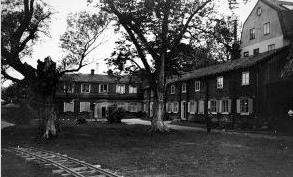
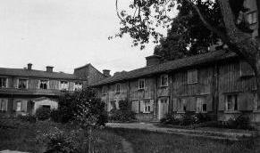
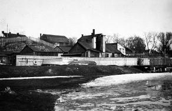
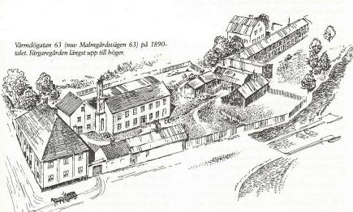
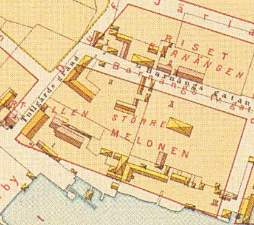
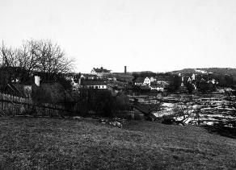
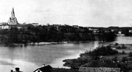
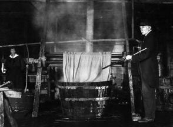
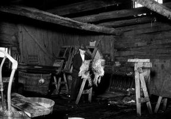
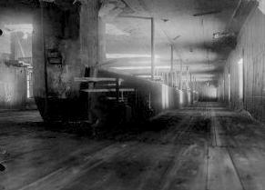

Södermalm i tid och rum
Gårdar med färg


Bostadslängorna byggda 1765. Bilden tagen 1923.
Kvarteret Pumpan, f d Vintertullen Större intill Barnängen i kvarteret Pumpan (f d Vintertullen Större) ligger Färgaregården, som är någonting alldeles för sig bland Söders kåkrester. Den utstrålar en atmosfär av för länge sedan svunnen tid. Kanske stod huset på plats redan när Jacob Gavelius på Karl XI:s tid styrde och ställde i grannskapet.
|
 |
Något färgeri ser man numera inte skymten av på Färgaregårdens tomt. Alla byggnader från den aktiva tiden, förutom det långsträckta bostadshuset, är helt utraderade. Annat var det förr när folk hade ärende till presshus, svavelkammare, torkhus, stall, bodar, skjul, båthus och hemlighus. Då låg roddbåtar förtöjda vid bryggan och solen glittrade i vattnet framför gårdsanläggningen. Kvarteret hamnade långt uppe på landbacken efter Hammarbyledens tillkomst och sjön sänkts till Saltsjöns nivå. Färgeriet var emellertid i funktion fram till 1930-talet. Den siste färgaren hette Robert Johansson. |
Boningshuset ser ut att rymma mer än det gör. Bottenvåningen innehåller blott två stycken tvårumslägenheter och övervåningen består av ett enda stort rum, den så kallade ramvinden, som förr användes till torkvind för nyfärgade tyger.
| Färgaregårdens mark tillhörde på 1680-talet Danvikens hospital och gårdsinnehavaren Hans Wessman måste betala arrende till denna institution. Färgeriet kom en kort tid att tillhöra Stora Sicklas kattuntryckeri, vilket 1745 köpte anläggningen vid Hammarbysjön som komplement till den egna verksamheten i Sickla. Redan året därpå var dp-n i händerna på bancokommissarien Christer Robsahm. Han var en driftig herre, som bland annat startade Tantos första sockerbruk. Till stranden av Hammarbysjön lockade bancokommissarien det färgeri vid Fatburssjön, som Niclas Pauli startat och som sonen Christofer Pauli senare drev |
 
|
|
 Karta 1885 |
I hörnet av Ljusterögatan låg fram emot 1930-talet kvar ett vackert gammalt flerfamiljshus i två våningar från 1760-talet. Det var ett panelat timmerhus med infodrade knutar och högrest, valmat tak. Östgaveln sköt in i slänten bakom, likt en backstuga. Om detta välformade hus hade bevarats, skulle vi haft kvar en obruten linje av byggnadshistoriskt intressanta hus uppifrån Nytorget ner till Barnängsområdet. Men marken här är i dag mera eftertraktad än den var 1837. Då betecknade Brandförsäkringsverket egendomen, innefattande färgeriets alla byggnader, såsom "avlägsen för speciellt ändamål (färgeri). Eldfarlig". |
|
Efter flera ägarbyten kom fastigheten 1848 i
händerna på handlaren och färgaren Olof Granlund. Han var verksam i de på gården för färgeri ordnade
fabriksbyggnaderna av sten. Mot seklets slut hade han sonen Hjalmar till kompanjon samt ett par anställda
arbetare. Det var vid det laget knappast någon lukrativ rörelse de bedrev. Pappa Olof tog 1895 i lön ut 1000
kronor och sonen 800 kronor om året ur rörelsen. Olof Granlund dog några år före sekelskiftet, varefter
sterbhuset och sedan sonen Axel ansvarade för egendomen och kommersen. År 1918 hade stället bytt ägare. Nu var det D F Håkansson som stod för driften, allt medan fastigheten mer och mer lutade mot sitt fall. 1928 tog Stockholms stad över alltsamman och snart var det gamla färgeriets dagar räknade. Något intresse för att bevara de nedslitna och nästan helt förfallna kåkarna fanns inte. |
 Till vänster hus i kvarteret Näcken. På andra sidan vattnet Färgargården och annan bebyggelse vid Barnängenfabrikerna. Färgargården är det vita huset i mitten. Det andra vita huset ovanför Färgargården låg i kvarteret Riset och inrymde under en längre period Stockholms stads uppfostringsanstalt för flickor. |
| Av foton att döma lutade träbyggnaderna på tomtens västra sida redan på 1890-talet åt alla håll och kanter. Grundförhållandena var sannerligen inte de bästa. Gårdsplanen låg ovårdad med grästovor här och var på marken. 1932 stod fabrikshuset av sten fortfarande upprätt, men "backstugan" hade rivits. 1946 var allt borta för att bereda plats för Fastighets AB Pumpans nybygge, som stod klart för inflyttning 1949. Hit flyttade KF:s Hugin Kassaregister och hade fabrikation igång till nedläggningen i slutet av 1970-talet. |
  Hammarby sjö mot NO. 1907 Hammarby sjö mot NO. 1907
|
Även om det är av allmänt kulturhistoriskt intresse att ta vara på Vintertullsområdets historia, så har den Granlundska epoken sin särskilda betydelse för mig personligen.
Fabriksbyggnaden i två våningar med långsida mot söder och Hammarbysjön hyrdes 1892 -l 1901 ut till Wilhelm Lagerholms Tryckfärgsfabrik. Under min uppväxttid kom detta företag, då flyttat till Lövholmen, såväl andligen som lekamligen att stå mig mycket nära. Firman var en fortsättning på Sveriges äldsta tryckfärgsfabrik, "Tryckfärgsfabriks AB" i Söderköping. Boktryckare Adolf Berglund flyttade i slutet av 1880-talet det år 1878 startade företaget till Stockholm.
|
 
|
Efter några år på Norrtullsgatan 11 drevs etablissemanget helt kort i Gust Carlsson & Co:s regi. Tillverkning
skedde i huset Fabriksgatan 2 på Kungsholmen. Industriområdet låg väster om Garnisonssjukhuset mellan
Hantverkargatan och Mälarstranden. I detta skede kom filosofie licentiat Wilhelm Lagerholm in i bilden,
sannolikt som
delägare i rörelsen. Han var dessförinnan uppsalabo och engagerad i Akademiska Bokhandeln. Bokhandeln hade 1884 en gågosse på fjorton vårar som hette Ernst Rydberg, som så småningom skulle bli min far. Wilhelm Lagerholm kom till Stockholm 1885. Här öppnade han en pappershandel i huset Hamngatan 14, mera känt som Sagerska huset. Till huvudstaden fick den då femtonårige Ernst Rydberg följa med. |
Från springpojksgöra, dräng- och bodbiträdestjänst i pappershandeln kom Ernst in i färgbranschen, när han 1890 följde Lagerholm till Gust Carlsson & Co:s fabrik. Tjugo år gammal skickades han till Tyskland för praktik i en färgfabrik i Wiesbaden. Hemkommen igen efter ett år utomlands väntade honom en plats som verkmästare i Lagerholms nystartade fabrik på Värrmdögatan 63.
|
Lagerholms Tryckfärgsfabrik tillverkade främst trycksvärta åt tidningarna samt tryckvalsar av valsmassan
Robur. Valsarna som formades i stående järncylindrar innehöll huvudsakligen sammansmält glycerin och gelatin,
som fick stelna kring en axel av stål. Det var en produkt som ingick i tryckerihanteringen, där tryckvalsarna
måste vara absolut släta och följsamt elastiska. Robur var en uppfinning av den svenska säkerhetständstickans
fader, Johan Edvard Lundström från Jönköping.
Färgfabriken blev kvar på Värmdögatan till år 1901. Man lämnade då Södermalm för att överta fastigheten Nynäs 1-9 på Lövholmen vid Gröndal. Köpet innefattade en fabriksbyggnad av tegel med tillhörande förrådsbyggnader och kontor. Husen uppfördes sannolikt 1894. Byggherre var Friestedts Bensvärt- och Benmjölsfabrik, som tidigare låg på Brännkyrkagatan 108, vid Hornskroken. |
 
|
|
 |
Kännetecknande för fabriken på Lövholmen var den mycket höga skorstenen, som stack upp genom taket.
Friestedt tillverkade benmjöl och försökte sprida odören så långt bort som möjligt. Redan två år senare
övertogs alltsammans av AB Litholit som tillverkade konststensplattor efter civilingenjör Adolf Rydholms
patent. Företaget upphörde efter tre år. Ernst Rydberg, som 1901 bodde på Bondegatan inte långt från fabriken på Värmdögatan, lämnade detta år Sverige för att bosätta sig i Tyskland, där han hade fått anställning som färgkemist hos Berger & Wirth i Leipzig. 1907 återkom han till Lagerholms Tryckfärgsfabrik borta vid Trekanten, nu som fabriksföreståndare. |